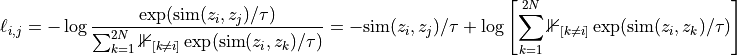
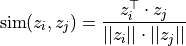

Deep learning for NeuroImaging in Python.
Note
This page is a reference documentation. It only explains the class signature, and not how to use it. Please refer to the gallery for the big picture.
- class nidl.estimators.ssl.SimCLR(encoder: Module, hidden_dims: Sequence[str], lr: float, temperature: float, weight_decay: float, random_state: int | None = None, **kwargs)[source]¶
Bases:
TransformerMixin,BaseEstimatorSimCLR implementation.
At each iteration, we get for every data x two differently augmented versions, which we refer to as x_i and x_j. Both of these images are encoded into a one-dimensional feature vector, between which we want to maximize similarity which minimizes it to all other data in the batch. The encoder network is split into two parts: a base encoder network f(.), and a projection head g(.). The base network is usually a deep CNN or SCNN, and is responsible for extracting a representation vector from the augmented data examples. Let’s denote the representations obtained from the encoder h=f(x). The projection head g(.) maps the representation h into a space where we apply the contrastive loss, i.e., compare similarities between vectors. In the original SimCLR paper g(.) was defined as a two-layer MLP with ReLU activation in the hidden layer. Note that in the follow-up paper, SimCLRv2, the authors mention that larger/wider MLPs can boost the performance considerably.
After finishing the training with contrastive learning, we will remove the projection head g(.), and use f(.) as a pretrained feature extractor. The representations z that come out of the projection head g(.) have been shown to perform worse than those of the base network f(.) when finetuning the network for a new task. This is likely because the representations z are trained to become invariant to many features that can be important for downstream tasks. Thus, g(.) is only needed for the contrastive learning stage.
Now that the architecture is described, let’s take a closer look at how we train the model. As mentioned before, we want to maximize the similarity between the representations of the two augmented versions of the same image, i.e., z_i and z_j, while minimizing it to all other examples in the batch. SimCLR thereby applies the InfoNCE loss, originally proposed by Aaron van den Oord et al. for contrastive learning. In short, the InfoNCE loss compares the similarity of z_i and z_j to the similarity of z_i to any other representation in the batch by performing a softmax over the similarity values. The loss can be formally written as:

The function text{sim} is a similarity metric, and the hyperparameter tau is called temperature determining how peaked the distribution is. Since many similarity metrics are bounded, the temperature parameter allows us to balance the influence of many dissimilar image patches versus one similar patch. The similarity metric that is used in SimCLR is cosine similarity, as defined below:

The maximum cosine similarity possible is 1, while the minimum is -1. In general, we will see that the features of two different images will converge to a cosine similarity around zero since the minimum, -1, would require z_i and z_j to be in the exact opposite direction in all feature dimensions, which does not allow for great flexibility.
Alternatively to performing the validation on the contrastive learning loss as well, we could also take a simple, small downstream task, and track the performance of the base network f(.) on that.
- Parameters:
encoder : nn.Module
the encoder f(.). It must store the size of the encoded one-dimensional feature vector in a latent_size parameter.
hidden_dims : list of str
the projector g(.) MLP architecture.
lr : float
the learning rate.
temperature : float
the SimCLR loss temperature parameter.
weight_decay : float
the Adam optimizer weight decay parameter.
max_epochs : int, default=None
optionaly, use a CosineAnnealingLR scheduler.
random_state : int, default=None
setting a seed for reproducibility.
kwargs : dict
Trainer parameters.
Notes
A batch of data must contains two elements: two tensors with contrasted images, and a list of tensors containing auxiliary variables.
Attributes
f
a
Modulecontaining the encoder.g
a
Modulecontaining the projection head.- configure_optimizers()[source]¶
Declare a
AdamWoptimizer and, optionnaly (max_epochsis defined), aCosineAnnealingLRlearning-rate scheduler.
- info_nce_loss(batch: tuple[Tensor, Tensor], mode: str)[source]¶
Compute and log the InfoNCE loss using
InfoNCE.
- training_step(batch: tuple[Tensor, Tensor], batch_idx: int, dataloader_idx: int | None = 0)[source]¶
Here you compute and return the training loss and some additional metrics for e.g. the progress bar or logger.
- Parameters:
batch : iterable, normally a
DataLoaderthe current data.
batch_idx : int
the index of this batch.
dataloader_idx : int, default=0
the index of the dataloader that produced this batch (only if multiple dataloaders are used).
- Returns:
loss : STEP_OUTPUT
the computed loss:
Tensor- the loss tensor.dict- a dictionary which can include any keys, but must include the key'loss'in the case of automatic optimization.None- in automatic optimization, this will skip to the next batch (but is not supported for multi-GPU, TPU, or DeepSpeed). For manual optimization, this has no special meaning, as returning the loss is not required.
To use multiple optimizers, you can switch to ‘manual optimization’
and control their stepping:
Notes
When
accumulate_grad_batches> 1, the loss returned here will be automatically normalized byaccumulate_grad_batchesinternally.Examples
>>> def __init__(self): >>> super().__init__() >>> self.automatic_optimization = False >>> >>> >>> # Multiple optimizers (e.g.: GANs) >>> def training_step(self, batch, batch_idx): >>> opt1, opt2 = self.optimizers() >>> >>> # do training_step with encoder >>> ... >>> opt1.step() >>> # do training_step with decoder >>> ... >>> opt2.step()
- transform_step(batch: Tensor, batch_idx: int, dataloader_idx: int | None = 0)[source]¶
Define a transform step.
Share the same API as
BaseEstimator.predict_step().
- validation_step(batch: tuple[Tensor, Tensor], batch_idx: int, dataloader_idx: int | None = 0)[source]¶
Operates on a single batch of data from the validation set. In this step you’d might generate examples or calculate anything of interest like accuracy.
- Parameters:
batch : iterable, normally a
DataLoaderthe current data.
batch_idx : int
the index of this batch.
dataloader_idx : int, default=0
the index of the dataloader that produced this batch (only if multiple dataloaders are used).
- Returns:
loss : STEP_OUTPUT
the computed loss:
Tensor- the loss tensor.dict- a dictionary. can include any keys, but must include the key'loss'.None- skip to the next batch.
Notes
When the
validation_step()is called, the model has been put in eval mode and PyTorch gradients have been disabled. At the end of validation, the model goes back to training mode and gradients are enabled.
Examples¶

Follow us